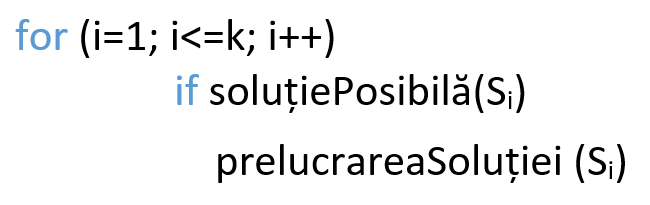

Metoda Trierii
SCHEMA GENERALĂ

(SoluțiePosibilă este o funcţie booleană care returnează valoarea true dacă elementul Si satisface condiţiile problemei şi false în caz contrar, iar PrelucrareaSoluției este o procedură care efectuează prelucrarea elementului selectat. De obicei, în această procedură soluţia Si este afişată la ecran.)

I. Numere de 3 cifre ce adunate dau o sumă oarecare
Condiția: Să se scrie un program care să afișeze la ecran toate numerele de 3 cifre, a căror sumă este egală cu N.
Abordarea problemei: Vom itera o variabilă pentru fiecare cifră a numărului și vom verifica dacă suma cifrelor este egală cu N.
Algoritm C++
{kind=link}
II. Bilete Norocoase
Condiția: Când te-ai urcat în transportul public spre casă, ai primit un bilet norocos. Acum te întrebi care sunt toate combinațiile posibile de cifre pentru astfel de bilete.
Abordarea problemei: Vom itera o variabilă pentru fiecare cifră a numărului și vom verifica dacă suma primelor două cifre este egală cu suma ultimelor două.
Algoritm C++
{kind=link}
III. Suma În Monede
Condiția: Ai nevoie urgent să schimbi o sumă în monede mai mici. Găsește toate combinațiile posibile de formare a acestei sume cu monede de 1,3,5 și 10 bani.
Abordarea problemei: Vom itera o variabilă pentru fiecare tip de monedă a numărului și vom verifica dacă suma lor este egală cu N.
Algoritm C++
{kind=link}